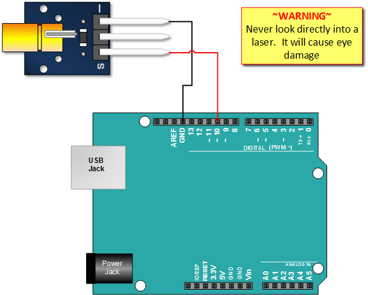

Лазерный излучатель KY-008
Описание
Это устройство Keyes - одно из наиболее распространенных
устройств в наборах датчиков Arduino. В сочетании с другими
компонентами его можно использовать для создания растяжек
или оптических эффектов. KY-008 особенно удобен, потому что
он может питаться напрямую от выходного контакта Arduino,
поскольку он потребляет только 30 мА от процессора, который имеет
выходы, рассчитанные на 40 мА.
Открыть оригинал
Схема подключения

Код подключения
int laserPin = 10;
void setup ()
{
pinMode (laserPin, OUTPUT); // define the digital output interface 13 feet
}
void loop () {
laserEmiter(laserPin,15,5);
}
void laserEmiter(int laserPin,int timeToBurn,int timeToRest){//made by Ilja Kazantsev
digitalWrite (laserPin, HIGH); // Turn Laser On
delay (timeToBurn);// delay while it burns
digitalWrite (laserPin, LOW); // Turn Laser Off
delay (timeToRest);//delay till new cicle
}
void setup ()
{
pinMode (laserPin, OUTPUT); // define the digital output interface 13 feet
}
void loop () {
laserEmiter(laserPin,15,5);
}
void laserEmiter(int laserPin,int timeToBurn,int timeToRest){//made by Ilja Kazantsev
digitalWrite (laserPin, HIGH); // Turn Laser On
delay (timeToBurn);// delay while it burns
digitalWrite (laserPin, LOW); // Turn Laser Off
delay (timeToRest);//delay till new cicle
}